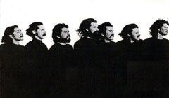

Similar al escenario post Segunda Guerra Mundial, la humanidad se enfrenta a una disyuntiva epocal sobre su futuro educativo...
Los medios comunitarios argentinos siguieron al aire durante la pandemia por COVID-19. Ernesto Lamas explica cuál fue el rol de éstos durante la crisis.
Un informe recientemente publicado evaluó los conflictos mineros en América Latina y la extracción y saqueo de recursos. Revisamos el capítulo referido a Chile
La apropiación del agua por parte de privados, afectando el santuario de la naturaleza Quebrada de Córdoba en El Quisco.
Entrevista a Alberto Mayol analizando la Convención Constitucional,una Constitución emanada de un espacio paritario.
Programa de archivo de radioaldea emitido en 2014. Entrevista a Duardo, Alexis Sepúlveda y Many.
"Clandestino" is a song of the people and this video represents the hearts and spirits of all those in search of a better world.
Alejandro “Mono” González, BRP
Eduardo Carrasco, Quilapayún
Documental Villa Alemana 120 años
¿Los mandó Giorgio? Matus y Bellolio
"Clandestino" is a song of the people and this video represents the hearts and spirits of all those in search of a better world.
Alejandro “Mono” González, BRP
Eduardo Carrasco, Quilapayún
Documental Villa Alemana 120 años
¿Los mandó Giorgio? Matus y Bellolio